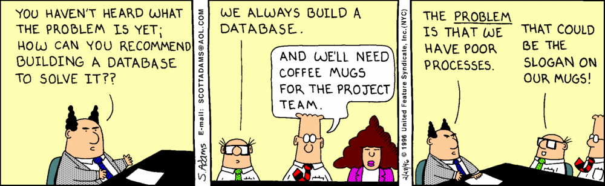

DOs and DON'Ts
Jeremy Mikola
jmikola
Agenda
- PECL Driver
- Schema Design
- Writing
- Reading
- Operations
- Doctrine ODM
PECL Driver
Don't use Mongo
Use MongoClientConnection Pooling
Re-use connections within a PHP worker process.
Distinguishing Connections
[
"localhost:27017;-;X;15487", // $m1, $m2
"localhost:27017;-;admin/user/c56c…8bbc;15487", // $m3
"127.0.0.1:27017;-;X;15487", // $m4
"sharding.local:40017;-;X;15487", // $m5
"primary.rs.local:30017;rs0;X;15487", // $m6
"secondary.rs.local:30018;rs0;X;15487" // $m6
]- Host and port
- Replica set
- Process ID
-
Authentication
- Credentials
- Database
Working with analytics?
MongoDB for Analytics
— John Nunemaker
Make the most of your indexes
- Kill 2+ birds with one stone
- Compound and multi-key indexes
- Mind your read/write ratio
- Ensure query selectivity
Aggregation Framework

Right-balanced Access
Random Access
Segmented Access
Sharding without replication?
Replication, and maybe sharding?

Data, RAM and disk


ODMs are a great tool
- Employ a real document model
- Framework and library integration
- Accelerate application development
- Abstract the database layer
Watch out for that last one.
Grok your DB and driver before abstracting it.
The same principles apply
ORMs don't kill your database, developers do!
— Guilherme Blanco